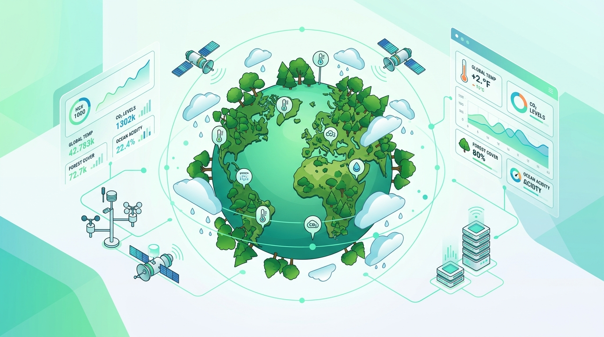
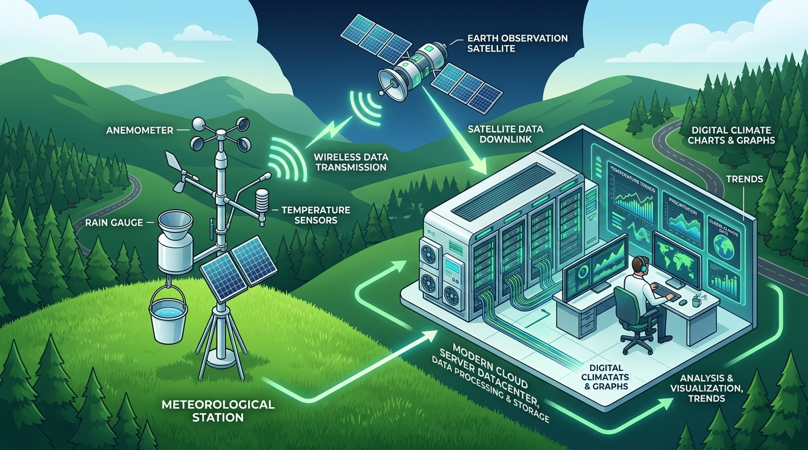

Digital climate monitoring harnesses automated weather stations (AWS), orbital Earth-observation satellites, and IoT telemetry to capture, analyze, and visualize multi-decadal temperature shifts and erratic precipitation trends. By transforming environmental data into actionable insights, modern science empowers societies to mitigate climate risk and protect vulnerable ecosystems.

Exploring the planetary mechanisms, anthropogenic drivers, and scientific imperatives behind long-term climate observation.
Climate change refers to significant, long-term alterations in global temperatures and weather patterns. While Earth has naturally experienced warmer and cooler epochs over millions of years, since the onset of the Industrial Revolution in the mid-19th century, anthropogenic (human) activities—predominantly the burning of fossil fuels—have accelerated planetary warming at an unprecedented rate.
Earth's atmosphere acts as a natural protective thermal blanket. Solar radiation penetrates the atmosphere to warm the surface. Naturally occurring greenhouse gases absorb outgoing infrared heat and re-emit it, maintaining a habitable average temperature of ~15°C. However, excessive emissions thicken this blanket, trapping surplus heat and intensifying radiative forcing.
Reliable environmental planning, food security, flood mitigation, and urban resilience require continuous empirical measurements. Digital monitoring provides high-resolution temporal data to identify subtle micro-climatic shifts, calibrate hydrological models, and guide national climate policies before ecological thresholds are crossed.
A fundamental principle in atmospheric science is differentiating short-term meteorological fluctuations from decadal statistical baselines.
Human industrial and economic activities responsible for rising greenhouse gas concentrations.
Coal, petroleum, and natural gas burned for electricity, heating, and heavy manufacturing release gigatons of CO₂ annually.
Clearing vital rainforests reduces natural carbon sinks and releases stored biomass carbon directly into the atmosphere.
Internal combustion engines across road, aviation, and maritime freight emit greenhouse gases and black carbon aerosols.
Livestock enteric fermentation generates methane (CH₄), while synthetic nitrogen fertilizers release potent nitrous oxide (N₂O).
Cement synthesis, chemical production, and refrigeration emit fluorinated synthetic greenhouse compounds.
Modern society depends on accurate environmental foresight to safeguard vital systems and prevent natural crises.
Predicting monsoon onset, crop sowing calendars, and seasonal frost risk to secure regional food supplies.
Guiding reservoir storage, glacier melt monitoring, groundwater recharge, and urban drought allocations.
Early warning detection for extreme flash floods, heatwaves, cyclones, and forest fire meteorological conditions.
Designing storm drainage, sea defenses, and green urban architecture resilient to future climate extremes.
Empirical thermal tracking showing multi-station observations, seasonal variations, and long-term warming anomalies.
Continuous thermal sensor measurements displaying average, upper limit, and minimum readings
Seasonal Temperature Dynamics: Sensor records illustrate continuous thermal telemetry. Rising baseline values across all monitored seasons correlate directly with increasing atmospheric carbon dioxide concentrations.
Real-time precipitation analysis, tipping-bucket sensor records, and an interactive atmospheric weather simulator.
Bar chart shows total precipitation (mm) and line indicates monthly rainy day count
Hydrological Distribution: Accumulated precipitation demonstrates pronounced seasonality. Under shifting climate patterns, intense brief rain squalls are replacing steady seasonal drizzle, heightening urban drainage risks.
Holistic planetary overview synthesizing temperature, rainfall, decadal warming trajectories, and telemetry station networks.
Click any monitoring station below to instantly synchronize temperature, rainfall, and decadal datasets across the dashboard:
Dual-axis evaluation tracking annual mean temperature (°C) against total annual precipitation (mm)
From ground-level IoT sensors to orbital satellites, see the complete end-to-end data pipeline transforming environmental physics into predictive intelligence.

Surface Automated Weather Stations and polar-orbiting satellites measure solar irradiance, ambient temperature, humidity, and barometric pressure.
IoT telemetry micro-controllers digitize physical sensor signals, bundling data packets for wireless transmission via LoRaWAN, 4G/5G, or satellite uplinks.
Secure geo-distributed cloud repositories ingest continuous time-series data streams with high-redundancy environmental fault tolerance.
Meteorological algorithms remove noise, calibrate drift, calculate moving baselines, and compute standardized precipitation and thermal anomaly indices.
Web GIS dashboards, hyetographs, and thermal anomaly maps render complex climatological datasets into human-understandable visual graphs.
Urban authorities, farmers, disaster agencies, and policymakers take proactive actions to safeguard vulnerable communities and natural habitats.
The digital hardware, communication protocols, and computational systems modern meteorology relies upon.
Autonomous, low-power micro-electronic devices equipped with platinum resistance thermometers (PRTs), optical rain sensors, hygrometers, and solar radiometers that operate untethered in remote wilderness zones.
Geostationary and Sun-synchronous satellites (e.g., NASA MODIS, ESA Sentinel, INSAT) capturing wide-spectrum imagery of sea-surface temperatures, vegetative health (NDVI), and cloud moisture dynamics across entire continents.
Scalable distributed cloud clusters hosting petabytes of historical weather data, executing climate model ensembles and powering global public-access environmental APIs.
Statistical time-series algorithms identifying non-linear patterns, cyclical phenomena like El Niño-Southern Oscillation (ENSO), and long-term climatic inflection thresholds.
Deep neural networks and machine learning models accelerating atmospheric simulation speeds by orders of magnitude, delivering hyper-local nowcasting and detecting anomalous weather hazards with high precision.
How persistent temperature spikes and erratic precipitation disrupt ecological equilibriums and human societies.
Accelerating glacier retreat, diminishing polar ice sheets, expanding tropical warm zones, and triggering deadly urban heatwaves.
Disrupting historical agricultural planting seasons, compressing monsoon periods into destructive high-intensity cloudbursts.
Overwhelming riverbanks and metropolitan stormwater channels, causing catastrophic infrastructure erosion and sediment deposition.
Exhausting topsoil moisture, shrinking major inland freshwater lakes, desiccating rivers, and elevating wildland wildfire risk.
Depleting subterranean aquifers and creating intense water competition between municipal centers, energy grids, and agriculture.
Reducing staple cereal yields (wheat, rice, maize) due to thermal heat stress, soil salinization, and expanding crop pest habitats.
Driving widespread coral reef bleaching, shifting migratory bird timelines, and increasing biodiversity extinction risks.
Threatening low-lying coastal cities with sea-level rise and increasing climate-driven internal displacement and migration.
Technological, ecological, and policy strategies to stabilize global temperatures and preserve planetary biodiversity.
Rapidly deploying solar photovoltaics, offshore wind turbines, and hydroelectric storage to decarbonize electricity generation.
Restoring degraded native woodlands and mangrove coastal buffers to capture atmospheric CO₂ and stabilize hydrological cycles.
Scaling drip irrigation, wastewater recycling, and rainwater harvesting cisterns to guard against prolonged drought spells.
Modernizing industrial motors, insulating civic buildings, and deploying smart LED illumination to cut wasted wattage.
Expanding electrified rail systems, urban bus rapid transit, and bicycling corridors to replace combustion vehicle reliance.
Minimizing single-use virgin plastics, composting organic municipal waste, and recovering industrial metals to reduce lifecycle carbon.
Practicing cover-cropping, low-till farming, and bio-fertilizers to rebuild organic soil carbon and prevent erosion.
Fostering scientific literacy through environmental curricula and community-led participatory digital weather observatories.
Test your comprehension of temperature anomalies, rainfall dynamics, and digital meteorological technologies.
“The temperature and rainfall values displayed in this project are sample/demo data created for educational visualization. They do not represent live meteorological measurements unless connected to an actual data source.” This platform was engineered for university coursework and demonstrative purposes in course CHE 110 Environmental Studies.
Official academic specifications, student authorship, and course curriculum alignment.
This interactive educational platform was developed to investigate the intersection of digital technology, meteorological sensors, and environmental science. By visualizing how temperature anomalies and rainfall variability are monitored, the project equips students with practical tools to understand climate dynamics and communicate environmental challenges effectively.
Designed to accompany a structured Continuous Assessment (CA) video presentation, every feature—from the Canvas rain and thunderstorm simulator to the multi-station time-series graphs—is fully functional, accessible, and grounded in standard meteorological principles.